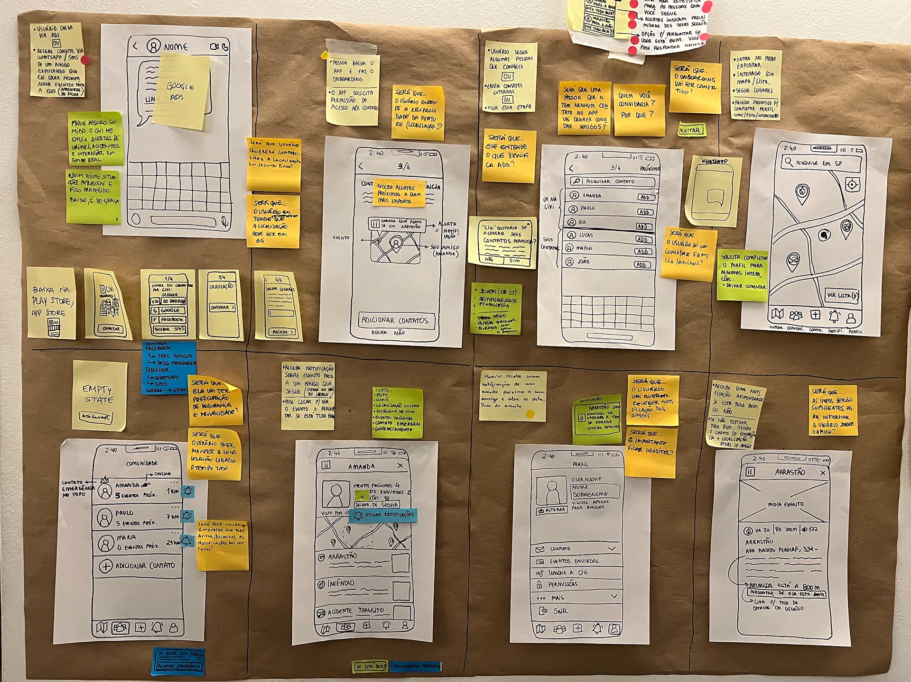
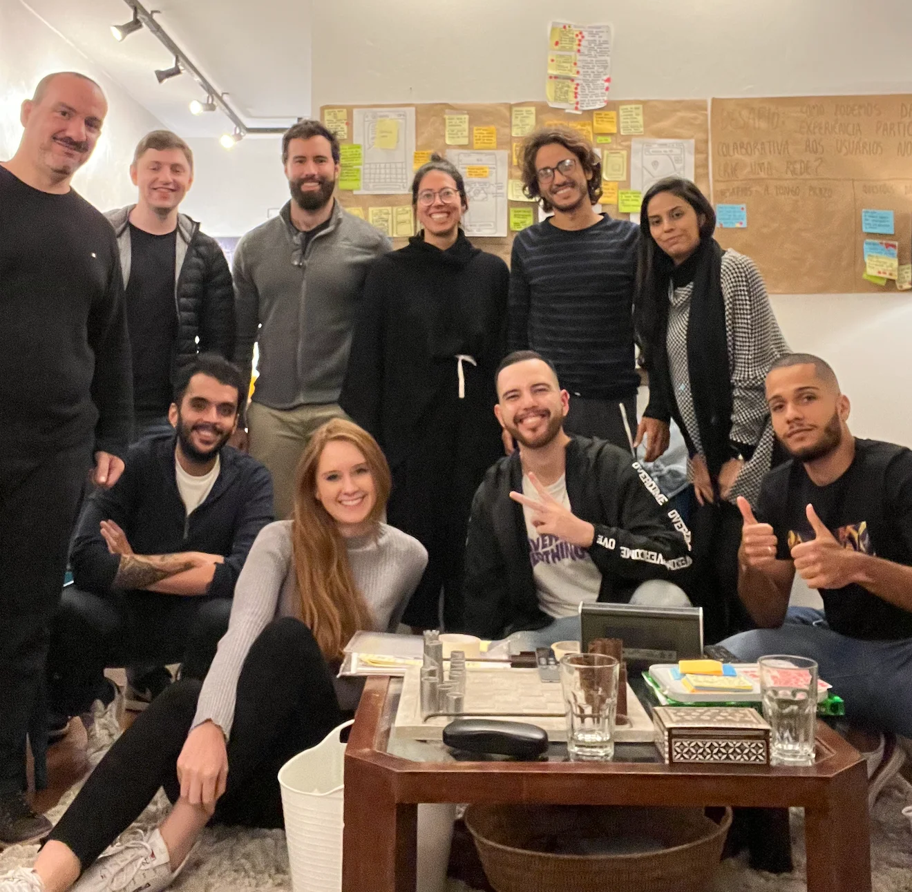

Overview
Civi was a mobile app focused on making cities safer, giving people security-related information and notifications in real time. It was live in São Paulo, Brazil.
In 2022, our team ran a Design Sprint 2.0 — a four-day process for answering a critical business question through sketching, prototyping, and testing with real users — to explore one challenge: how might we give users a participatory, collaborative experience in the app that creates a network?
Day 1: Map & sketch
We opened by introducing the process and the challenge, then went around the room letting each specialist answer a set of core questions about the product, its users, and its risks — so everyone started from the same understanding before we began generating ideas.
From there, we turned what came up into "How might we" notes, clustered and voted on them, then wrote long-term goals and the sprint questions that could get in our way.
With that foundation, we mapped a simplified user journey — discover, learn, use — and matched each "How might we" to the step it applied to, so we knew exactly where to focus the rest of the sprint.
After lunch, each of us researched a few outside references relevant to the challenge and presented one to the group.
We closed the day with individual sketching — loose notes first, then Crazy Eights (eight quick variations on one idea), and finally a single, fully worked solution: three screens sketched on paper with a title and a plain-language explanation of how each one would work.
Day 2: Decide & storyboard
Every solution from Day 1 went up on the wall for an "Art Museum" session — everyone walked through in silence, voting on the ideas that stood out and leaving questions on sticky notes wherever they had doubts.
From there, the facilitator walked the group through where the votes landed, each of us pitched one idea in under a minute, and our decider spent two supervotes committing to a direction — combining the strongest parts of a couple of different solutions.
We wrote out user steps for the chosen flow, then spent close to two hours turning it into an eight-panel storyboard.
We closed the day by planning the test itself — who to recruit (people who'd never used Civi, a mix of ages and backgrounds), how many (five, plus two on standby), and what we wanted to learn from them.

Day 3: Prototype & test script
This was my favorite part of the whole process: prototyping. That day, I built the interactive prototype in Figma from the previous day's storyboard, while Viviane wrote the test script — we reviewed both together once they were done.
The script paired a few background questions — age, occupation, family, safety concerns — with hands-on tasks built directly from the hypotheses we'd written the day before, so we could observe how people actually behaved rather than just ask their opinion.
Here's the prototype I built that day.
Day 4: Let's test it!
This day was reserved entirely for user interviews. We tested with 5 people — 4 remotely over Zoom, 1 in person — each session split into a 30-minute intro, 30 minutes testing the prototype against real tasks, and a 30-minute debrief with the team.
For the remote interviews, I moderated from a separate room while the facilitator shared the call on a screen in the main room, so the rest of the team could watch live without crowding the interviewee.
I set up a shared Miro board so everyone could log observations in real time as they watched: orange for anything a participant got confused about, green for what worked as planned, yellow for neutral notes.
One insight stood out: the product resonated more with an older audience, which put accessibility front and center, since older users were often less comfortable with technology and could struggle with small text or low-contrast screens.
Conclusion
The results gave us confidence to move forward. A few weeks later, after polishing the design for clarity and accessibility and running a few more rounds of testing, we launched the feature.
This was my first Design Sprint in person with the team (I usually worked remotely). It was four very productive days — together we created something that would otherwise have taken more than a month to develop and validate on our own. It was also a great learning experience, and it brought the team closer for the challenges ahead.
